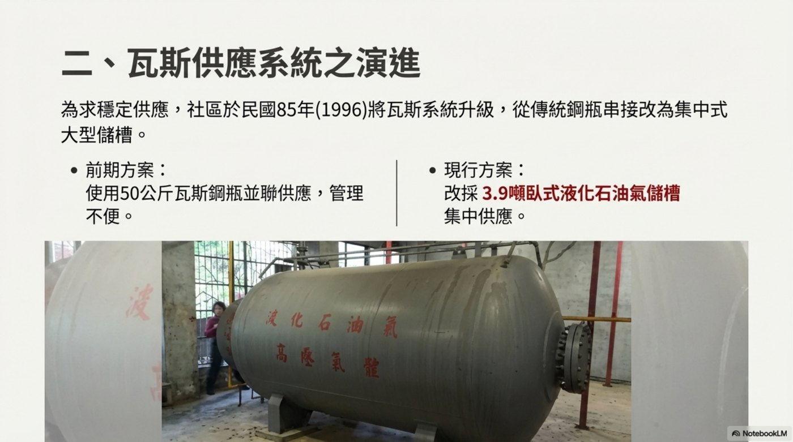
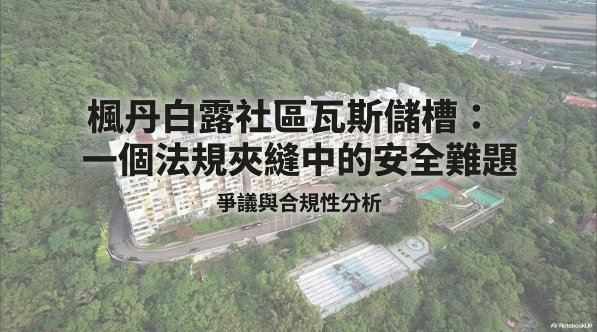
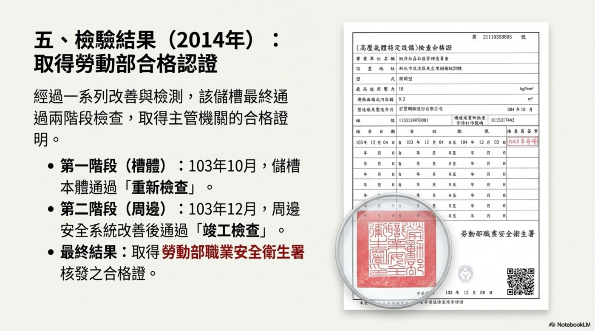
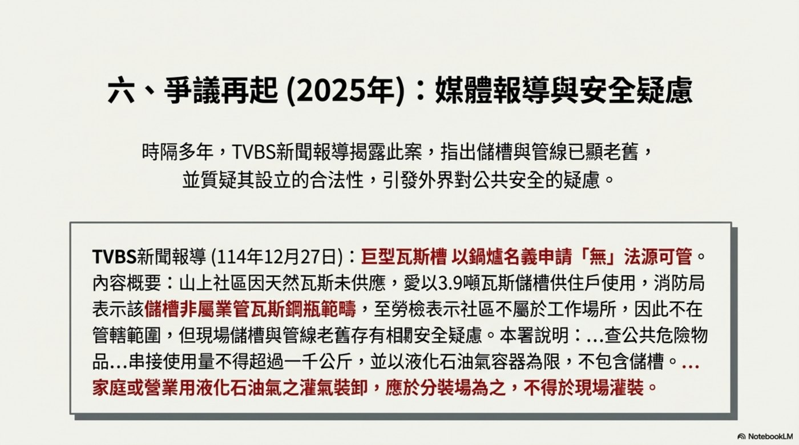
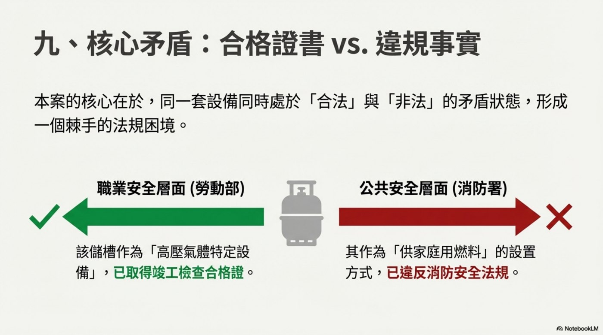
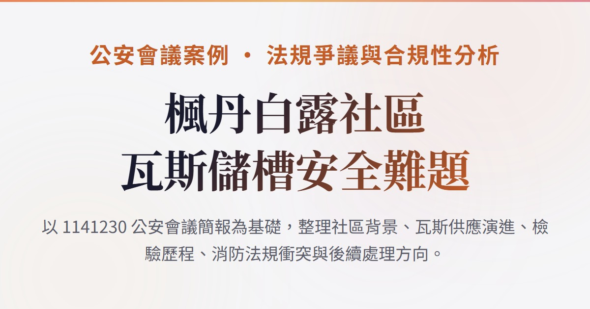

供應系統演進：從鋼瓶串接到大型儲槽
社區為求穩定供應，在民國 85 年將瓦斯系統升級，由傳統鋼瓶串接改為集中式大型儲槽。

以 1141230 公安會議簡報為基礎，整理社區背景、瓦斯供應演進、檢驗歷程、消防法規衝突與後續處理方向。
本案核心在於同一套設備同時處於「合法」與「非法」的矛盾狀態，形成棘手的法規困境。
2025 年媒體重新揭露本案，指出儲槽與管線老舊，並質疑其設立合法性，引發外界對公共安全的疑慮。

社區為求穩定供應，在民國 85 年將瓦斯系統升級，由傳統鋼瓶串接改為集中式大型儲槽。

民國 103 年因法規變革，社區管委會主動申請將儲槽納入安全管理體系，並經改善與檢測後取得主管機關合格證明。

2025 年媒體重新揭露本案，指出儲槽與管線老舊，並質疑其設立合法性，引發外界對公共安全的疑慮。
社區為求穩定供應，在民國 85 年將瓦斯系統升級，由傳統鋼瓶串接改為集中式大型儲槽。
民國 103 年因法規變革，社區管委會主動申請將儲槽納入安全管理體系，並經改善與檢測後取得主管機關合格證明。
2025 年媒體重新揭露本案，指出儲槽與管線老舊，並質疑其設立合法性，引發外界對公共安全的疑慮。

| Topic | Point | Section |
|---|---|---|
| ✅ 檢驗歷程 | 民國 103 年納管後，儲槽本體與周邊安全系統通過檢查並取得合格證 | 檢驗歷程：從納管申請到取得合格證明 |
| 🚫 消防爭議 | 消防機關認定其容量與現場灌裝方式違反消防法規 | 爭議再起：媒體報導與消防安全疑慮 |
| ⚖️ 核心矛盾 | 職安合格不等於消防合規，本案凸顯跨部會法規競合下的公共安全漏洞 | 核心矛盾：合格證書 vs. 違規事實 |
本案不是單一設備問題，而是職安、消防與社區能源供應之間的治理落差。後續處理應回到公共安全風險，逐步釐清責任與制度缺口。
確認儲槽設置、使用與管理責任，釐清是否符合消防相關規範與公共危險物品管理要求。
盤點山區社區、替代燃料供應與大型瓦斯儲槽是否存在相同風險，避免個案處理後留下制度盲點。
重新檢視跨部會法規競合下的審查、通報與風險治理流程，讓職安合格不被誤解為消防合規。
是工作場所、住宅社區，還是公共危險物品管理場景
是高壓氣體特定設備，還是家庭用燃料供應設備
合格證書只代表特定法規下的檢驗結果
是工作場所、住宅社區，還是公共危險物品管理場景
是高壓氣體特定設備，還是家庭用燃料供應設備
合格證書只代表特定法規下的檢驗結果
當使用情境牽涉大量住戶，消防風險必須被獨立評估
個案處理後，要回推制度是否有相同漏洞
